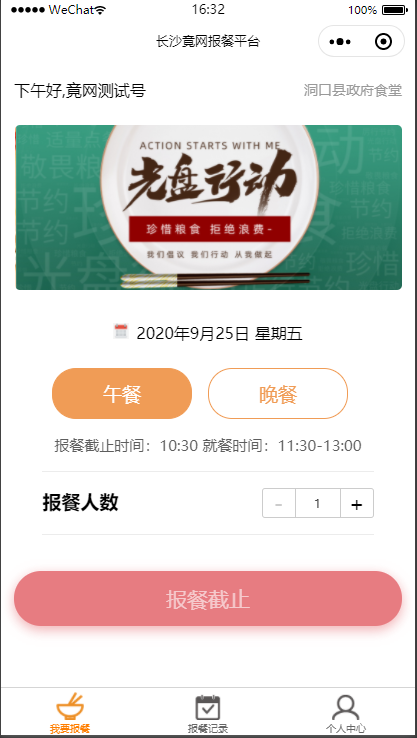

1系统界面
1.1 系统界面说明
微信小程序搜索：“竟网报餐平台”，进入小程序后、可以看到整体界面，见下图。
底部导航栏，分为我要报餐，报餐记录，个人中心。点击导航栏即可进入相应操作界面。
我要报餐：主要是提供当天中午报餐、晚上报餐功能，用户可选择报餐人数和报餐类型（中餐、晚餐）进行报餐
报餐记录：查询个人报餐记录
个人中心：食堂入驻、报餐统计、专属小程序码、报餐时间配置、单位人员审核、操作手册和技术支持，可变更用餐单位

2功能介绍
一键报餐，实时统计，精准备餐，减少浪费。对报餐人数实时数据统计分析，食堂可做到精准备餐，真正通过数据驱动节约，避免浪费。
2.1 授权绑定小程序
2.2 报餐
2.3 查询报餐记录
2.4 取消报餐
2.5 食堂入驻
2.6 变更用餐（单位）食堂
2.7 技术支持
3基本操作
3.1 操作动作
报餐、查询、统计、授权绑定、变更用餐单位（食堂）。
4系统管理
4.1 报餐时间配置
食堂管理员可自行配置用餐时间、报餐截止时间等参数。
操作流程：
在【个人中心】-【报餐时间配置】中进行参数配置，主要几个参数是午餐报餐截止时间、晚餐报餐截止时间、午餐就餐时间和晚餐就餐时间。
4.2 单位人员审核
食堂管理员可审核绑定本食堂的用餐人员。
操作流程：
在【个人中心】-【单位人员审核】中进行审核单位人员，分未审核和已审核板块。